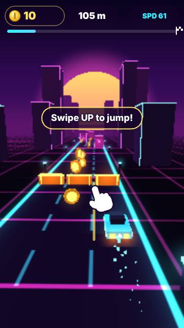
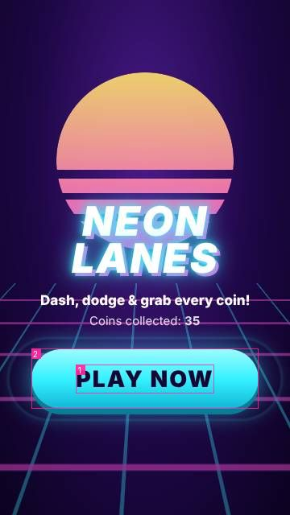

| time | saw | phase | planner | actions (with human reaction time) | notes | cost |
|---|
0:02.0
turn 1 |  |
tutorial
decider: tutorial 97%
clarity 98% |
sees: 3-lane synthwave car runner, tutorial 'Swipe to switch lanes!', pink block ahead in center lane
progress: first turn |
0:03.6 swipe swipe right to switch to right lane and dodge obstacle (+1643 ms) |
3-lane runner. Swipe left/right to switch lanes. Dodge pink blocks, collect coins. | 3.3s
$0.0059 |
0:04.5
turn 2 |  |
gameplay
decider: gameplay 75%
clarity 71%
last input worked: 97% |
sees: Car in right lane collecting coins, pink block in middle lane, distant obstacle ahead
progress: Swiped right, dodged pink block, collected coins (9 total)
reflex policy (zone 450,150,750,850): dodge_left — a pink block with an X is in the same lane as the blue car, and the car is in the middle or right lane; dodge_right — a pink block with an X is in the same lane as the blue car, and the car is in the left lane
→ 24 checks, fired 1 (dodge_right×1), ended by duration |
0:04.8 swipe reflex dodge_right (late): a pink block with an X is in the same lane as the blue car, and the car is in the left lan (+309 ms) |
3-lane runner. Swipe left/right to switch lanes. Dodge pink X blocks, collect coins. Using react for fast dodging. | 5.4s
$0.0090 |
0:07.5
turn 3 |  |
tutorial
decider: tutorial 90%
clarity 94%
last input worked: 60% |
sees: Tutorial prompt 'Swipe UP to jump!' with orange barriers across all 3 lanes ahead
progress: Dodged pink block, reached 105m, now jump tutorial appeared |
0:09.1 swipe swipe up to jump over the orange barriers (+1581 ms) |
3-lane runner. Swipe left/right to switch lanes, swipe UP to jump over orange barriers. Dodge pink X blocks, collect coins. | 2.4s
$0.0057 |
0:09.9
turn 4 |  |
gameplay
decider: gameplay 68%
clarity 72%
last input worked: 99% |
sees: 3-lane runner gameplay, GREAT JUMP! text, car in right lane, pink X block ahead in right lane, coins in middle lane
progress: Successfully jumped over the orange barriers
reflex policy (zone 430,150,730,850): dodge_left — a pink block with an X is in the same lane as the blue car, and the car is in the right or middle lane; dodge_right — a pink block with an X is in the same lane as the blue car, and the car is in the left lane; jump_barrier — an orange barrier is in the same lane as the blue car
→ 10 checks, fired 4 (dodge_left×2, dodge_right×2), ended by interrupted |
0:10.1 swipe reflex dodge_left: a pink block with an X is in the same lane as the blue car, and the car is in the right or (+180 ms)
0:10.9 swipe reflex dodge_left: a pink block with an X is in the same lane as the blue car, and the car is in the right or (+236 ms)
0:11.7 swipe reflex dodge_right: a pink block with an X is in the same lane as the blue car, and the car is in the left lan (+247 ms)
0:12.5 swipe reflex dodge_right: a pink block with an X is in the same lane as the blue car, and the car is in the left lan (+230 ms) |
3-lane runner. Swipe left/right to switch lanes, swipe UP to jump over orange barriers. Dodge pink X blocks, collect coins. Speed is 65. | 6.3s
$0.0103 |
0:13.4
turn 5 |  |
fail
decider: fail 97%
clarity 90%
last input worked: 14% |
sees: Crashed popup with Revive (1 free) and No thanks buttons
progress: Crashed at 156m after dodging several blocks |
0:14.8 tap “Revive and continue” tap Revive (1 free) to continue the run (+1420 ms) |
3-lane runner. Swipe left/right to switch lanes, swipe UP to jump over orange barriers. Dodge pink X blocks, collect coins. Speed is SPD 2. | 2.7s
$0.0059 |
0:15.5
turn 6 |  |
gameplay
decider: gameplay 83%
clarity 90%
last input worked: 100% |
sees: 3-lane runner gameplay, REVIVED! Go go go!, blue car in left lane, SPD 54
progress: Revived and continuing the run at 162 m.
reflex policy (zone 480,200,730,800): jump_barrier — an orange barrier is in the same lane as the blue car; dodge_left — a pink block with an X is in the same lane as the blue car, and the lane to its left is clear; dodge_right — a pink block with an X is in the same lane as the blue car, and the lane to its left is blocked or the car is in the left lane
→ 15 checks, fired 0, ended by something_new |
|
3-lane runner. Swipe left/right to switch lanes, swipe UP to jump over orange barriers. Dodge pink X blocks, collect coins. Speed is SPD 54. | 6.1s
$0.0097 |
0:17.0
turn 7 |  |
gameplay
decider: gameplay 97%
clarity 72%
last input worked: 89% |
sees: 3-lane runner at 190m, SPD 75. Blue car in left lane, coins in right lane, pink X block ahead in middle lane.
progress: Revived and continuing the run.
reflex policy (zone 480,200,740,800): jump_barrier — an orange barrier is in the same lane as the blue car; dodge_left — a pink block with an X is in the same lane as the blue car, and the car is in the right or middle lane; dodge_right — a pink block with an X is in the same lane as the blue car, and the car is in the left lane
→ 14 checks, fired 5 (dodge_left×4, dodge_right×1), ended by duration |
0:17.4 swipe reflex dodge_left: a pink block with an X is in the same lane as the blue car, and the car is in the right or (+154 ms)
0:18.2 swipe reflex dodge_left: a pink block with an X is in the same lane as the blue car, and the car is in the right or (+290 ms)
0:19.1 swipe reflex dodge_right: a pink block with an X is in the same lane as the blue car, and the car is in the left lan (+306 ms)
0:20.0 swipe reflex dodge_left: a pink block with an X is in the same lane as the blue car, and the car is in the right or (+207 ms)
0:21.0 swipe reflex dodge_left: a pink block with an X is in the same lane as the blue car, and the car is in the right or (+199 ms) |
3-lane runner. Swipe left/right to switch lanes, swipe UP to jump over orange barriers. Dodge pink X blocks, collect coins. Speed is SPD 75. | 5.4s
$0.0092 |
0:21.5
turn 8 |  |
gameplay
decider: gameplay 98%
clarity 65%
last input worked: 95% |
sees: 3-lane runner gameplay at 288m, SPD 82, car in left lane, pink X blocks ahead in left/right lanes and coins in center
progress: Reflex policy kept car alive for 4.5s, reached 288m, SPD 82
reflex policy (zone 420,200,780,800): jump_barrier — an orange barrier is in the same lane as the blue car; dodge_left — a pink block with an X is in the same lane as the blue car, and the car is in the right or center lane; dodge_right — a pink block with an X is in the same lane as the blue car, and the car is in the left lane
→ 10 checks, fired 4 (dodge_right×1, jump_barrier×3), ended by interrupted |
0:21.7 swipe reflex dodge_right: a pink block with an X is in the same lane as the blue car, and the car is in the left lan (+151 ms)
0:22.4 swipe reflex jump_barrier: an orange barrier is in the same lane as the blue car (+215 ms)
0:23.1 swipe reflex jump_barrier: an orange barrier is in the same lane as the blue car (+191 ms)
0:23.9 swipe reflex jump_barrier (late): an orange barrier is in the same lane as the blue car (+325 ms) |
3-lane runner. Swipe left/right to switch lanes, swipe UP to jump over orange barriers. Dodge pink X blocks, collect coins. Speed is SPD 82. Reflexes work well. | 5.5s
$0.0096 |
0:24.9
turn 9 |  |
fail
decider: fail 99%
clarity 46%
last input worked: 14% |
sees: GAME OVER screen at 339 m with 35 coins
progress: crashed into an orange barrier |
0:24.9 wait wait for restart or end card options to appear |
3-lane runner. Swipe left/right to switch lanes, swipe UP to jump over orange barriers. Dodge pink X blocks, collect coins. Crashed at 339m. | 3.0s
$0.0058 |
0:26.9
turn 10 |  |
end_card
decider: title 69%
clarity 95%
last input worked: 97% |
sees: End card showing NEON LANES, Coins collected: 35, and a PLAY NOW button
progress: End card appeared after crash |
0:29.9 tap “Play now” tap the PLAY NOW button on the end card (+568 ms) |
3-lane runner. Swipe left/right to switch lanes, swipe UP to jump over orange barriers. Dodge pink X blocks, collect coins. Crashed at 339m, collected 35 coins. Reached end card. | 3.2s
$0.0061 |